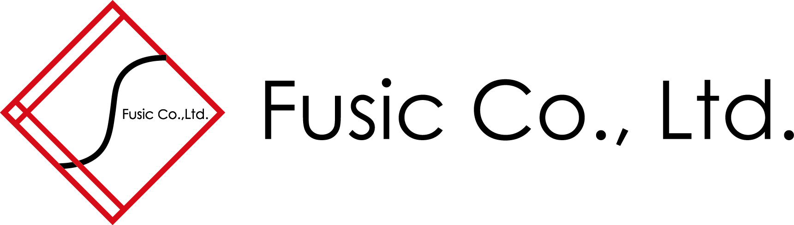

こんにちは世界！
2回目の Rails Girls Fukuoka が開催されます!
Ruby on Railsのすてきな世界を私達と一緒に体験しましょう！
ワークショップは無事終了しました。ご参加の皆様、ありがとうございました！
日本各地で続々とRailsGirlsのイベントが行われています。
もし、他の地域での参加をご検討される方は、
Eventsページをご参照ください。
概要 コーチに教えてもらいながらプログラムを設計して、プロトタイプを作り、コーディングします。
必要なもの 自分のノートパソコン、やる気とキラリと光るイマジネーションを持ってきてください！
コーチ募集は終了しました。たくさんのコーチのお申し出をいただき、ありがとうございました。
| 19:00 - 21:00 |
インストール・ ディまずは、参加者同士、お互いに知り合いになりましょう。ご自分のノートパソコンをお持ちください。 それぞれのパソコンにRubyとRailsをインストールし、Rubyプログラミングの最初の一歩をコーチとともに始めてみましょう。 |
|---|
| 9:00 - 10:00 |
レジストレーション金曜日にRuby on Railsのインストールトラブルがあれば、朝のうちに解決しておきましょう。 金曜日にすべてうまく行ったひとは参加しなくてもOKです。9:30ごろからのんびりきてください。 |
|---|---|
| 10:00 - 10:30 |
開会一日の流れの説明。オーガナイザーから一言。 |
| 10:30 - 11:00 |
ワークショップ ― Railsって？ウェブアプリって？ウェブやブラウザの仕組みについて知りましょう。また、Ruby on Railsとは？という説明も簡単に行います。! |
| 11:00 - 11:20 |
休憩・質問タイム |
| 11:20 - 12:30 |
ワークショップ ー ウェブアプリの構築はじめてのウェブアプリにトライしてみよう！ |
| 12:30 - 13:45 |
ランチ会場周辺にコンビニや飲食店がありますのでご活用ください。ランチマップもあります！！ ランチマップはFusic様のオススメランチの記事を参考にさせていただきました！ありがとうございます。 お店ごとのおすすめメニューの詳細は、ぜひ記事をご覧になってみてください。 |
| 13:45 - 14:15 |
スポンサーLTスポンサーの皆様や、希望者の方のためのライトニングトーク（とても短い、印象的なプレゼンテーション）の時間です。 |
| 14:15 - 15:15 |
ワークショップ ー ウェブアプリの構築 |
| 15:15- 15:25 |
休憩・質問タイム |
| 15:25 - 16:30 |
ワークショップ自分流のウェブアプリに変えてみよう！ |
| 16:30 - |
アフターパーティー & ライトニングトークス参加者、コーチ、スタッフによるパーティです。ケータリングやお飲物をご用意いたします。ワークショップで聞き損ねたことや RubyやRailsのこと、ステップアップの方法など、コーチに気軽に質問してみましょう。アフター・パーティも含めて参加費用はかかりません！お気軽にご参加下さい。 |
会場:
エンジニアカフェ 地図
福岡市中央区天神1丁目15番30号（赤煉瓦文化館1F）
多数のご支援のお申し出をいただき、ありがとうございました! Rails Girls Fukuoka は以下のすばらしいパートナーとの共同開催です。
 株式会社Fusicは、技術が好きなエンジニアが集まる会社です。クラウド上で動作するWebアプリケーションやサーバレスアプリケーションの開発事例があり、開発を速く・楽しいものにするという点でRubyが大きく寄与しています。自社サービスの1つである「mockmock」はIoT開発をサポートするサービスであり、Ruby on Railsを使って開発しています。
株式会社フロイデールWebProductionは、メンバー7人中5名が女性で構成されたWeb制作チームです。元アヴァンティスタッフが多いためインタビューや文章作成などを得意としていますが、女性のエンジニアも複数在籍しています。 「次のステージへ進みたいすべての人を支援する」 をスローガンにするフロイデールは、Rubyエンジニアにキャリアチェンジしたい方を応援し、Rubyコミュニティへの積極的な参加に取り組んで参ります。
 GMOペパボ株式会社は、福岡で創業した会社です。福岡支社では、主に「ロリポップ！」「ムームードメイン」などのホスティング事業や、CtoCハンドメイドマーケット「minne」の開発・運営を行っています。ペパボは、Ruby
と Rails を採用した開発環境の整備や、開発者への支援などを積極的に行い、Rubyコミュニティをもっとおもしろくしたいと考えています。
GMOペパボ株式会社は、福岡で創業した会社です。福岡支社では、主に「ロリポップ！」「ムームードメイン」などのホスティング事業や、CtoCハンドメイドマーケット「minne」の開発・運営を行っています。ペパボは、Ruby
と Rails を採用した開発環境の整備や、開発者への支援などを積極的に行い、Rubyコミュニティをもっとおもしろくしたいと考えています。
 Sansan株式会社は、「出会いからイノベーションを生み出す」をミッションに掲げ、法人向け名刺管理サービス「Sansan」と個人向け名刺アプリ「Eight」を提供しています。「Eight」はRuby
on Railsで開発しており、取り込んだ名刺から、いつでも活用できるあなただけのビジネスネットワークを構築することができます。Rails
Girlsでの皆さんとの「出会い」を楽しみにしています。
Sansan株式会社は、「出会いからイノベーションを生み出す」をミッションに掲げ、法人向け名刺管理サービス「Sansan」と個人向け名刺アプリ「Eight」を提供しています。「Eight」はRuby
on Railsで開発しており、取り込んだ名刺から、いつでも活用できるあなただけのビジネスネットワークを構築することができます。Rails
Girlsでの皆さんとの「出会い」を楽しみにしています。
 株式会社SmartHR
社会保険・労働保険それ自体はすばらしい制度ですが、手続きの不便さ、煩雑さ、わかりづらさは否めません。私たちはこのアナログな領域を、テクノロジーと創意工夫でもっとシンプル、かんたん、便利に変えていきます。
経営者は本業に、人事担当者は採用や制度づくりに集中でき、従業員はよりよい環境で安心して働くことができる社会を 私達は SmartHR
で実現します。
株式会社SmartHR
社会保険・労働保険それ自体はすばらしい制度ですが、手続きの不便さ、煩雑さ、わかりづらさは否めません。私たちはこのアナログな領域を、テクノロジーと創意工夫でもっとシンプル、かんたん、便利に変えていきます。
経営者は本業に、人事担当者は採用や制度づくりに集中でき、従業員はよりよい環境で安心して働くことができる社会を 私達は SmartHR
で実現します。
 株式会社アカツキは、心が求める活動がみんなの幸せの原動力となる世界「A Heart Driven
World.」をビジョンとして掲げ、エンターテインメントをグローバルに展開しています。
アカツキエンジニアは「テクノロジーを活用して、人の感情をもっと豊かに動かし、ワクワクさせることができる」という信念のもとRubyなどのOSSを活用し、また積極的に貢献しています。
株式会社アカツキは、心が求める活動がみんなの幸せの原動力となる世界「A Heart Driven
World.」をビジョンとして掲げ、エンターテインメントをグローバルに展開しています。
アカツキエンジニアは「テクノロジーを活用して、人の感情をもっと豊かに動かし、ワクワクさせることができる」という信念のもとRubyなどのOSSを活用し、また積極的に貢献しています。
 メドピアは現役医師が経営するヘルステックカンパニーです。国内医師の3人に1人が参加するコミュニティサイトで医師を支援すると共に、医師や管理栄養士のネットワークを活かして一般向けのヘルスケアサービスを展開しています。
メドピアは現役医師が経営するヘルステックカンパニーです。国内医師の3人に1人が参加するコミュニティサイトで医師を支援すると共に、医師や管理栄養士のネットワークを活かして一般向けのヘルスケアサービスを展開しています。
 esa
は、「情報を育てる」をコンセプトに作られた、自律的なチームのための情報共有サービスです。日報や議事録、仕様書やマニュアル、アイデアの共有など様々な種類の情報共有に適しており、Markdownで書ける使い勝手のよいインターフェイスで、チームのより良いコラボレーションをサポートします。
esa
は、「情報を育てる」をコンセプトに作られた、自律的なチームのための情報共有サービスです。日報や議事録、仕様書やマニュアル、アイデアの共有など様々な種類の情報共有に適しており、Markdownで書ける使い勝手のよいインターフェイスで、チームのより良いコラボレーションをサポートします。
 リンクアンドモチベーションは、世界初の「モチベーション」にフォーカスした企業です。これまでは組織人事コンサルティングや研修を提供する企業でしたが、これからは「すべての組織と個人の変革」に向けてテクノロジー企業に転換しようとしています。この第二創業期を共に創って頂けるエンジニア・プロダクトマネジャー・デザイナーの方々を積極募集しています。
リンクアンドモチベーションは、世界初の「モチベーション」にフォーカスした企業です。これまでは組織人事コンサルティングや研修を提供する企業でしたが、これからは「すべての組織と個人の変革」に向けてテクノロジー企業に転換しようとしています。この第二創業期を共に創って頂けるエンジニア・プロダクトマネジャー・デザイナーの方々を積極募集しています。
 クラッソーネは、「豊かな暮らしで人々を笑顔に」を
ミッションに掲げ、家づくり分野でユーザー（施主様）とパートナー（建築工事会社）のマッチングサービス 「
くらそうね」を展開しています。現在、ユーザーが簡単に工事会社を比較でき、安心して工事を発注できる、解>体工事マッチングプラットフォームを、Ruby
on Railsで開発しています。この新サービスを一緒につくっていた だける仲間を募集中です。
クラッソーネは、「豊かな暮らしで人々を笑顔に」を
ミッションに掲げ、家づくり分野でユーザー（施主様）とパートナー（建築工事会社）のマッチングサービス 「
くらそうね」を展開しています。現在、ユーザーが簡単に工事会社を比較でき、安心して工事を発注できる、解>体工事マッチングプラットフォームを、Ruby
on Railsで開発しています。この新サービスを一緒につくっていた だける仲間を募集中です。
 GitHub
はソフトウェアの共同開発をするための最高の環境を開発・提供しています。1000万人以上のユーザーが友だち、同僚、クラスメートと、時にはまったく知らない人とでさえ、コードなどを共有して素晴らしいプロジェクトを行っています。
GitHub
はソフトウェアの共同開発をするための最高の環境を開発・提供しています。1000万人以上のユーザーが友だち、同僚、クラスメートと、時にはまったく知らない人とでさえ、コードなどを共有して素晴らしいプロジェクトを行っています。
 私たち永和システムマネジメントは Ruby や Ruby on
Railsを活用したアプリケーションをアジャイルに構築できる日本有数のソフトウェア受託企業です。私たちはお客さまの投資を最大化すべく研鑽を続けています。また、Rubyコミュニティの支援も2006年から積極的に行っています。
私たち永和システムマネジメントは Ruby や Ruby on
Railsを活用したアプリケーションをアジャイルに構築できる日本有数のソフトウェア受託企業です。私たちはお客さまの投資を最大化すべく研鑽を続けています。また、Rubyコミュニティの支援も2006年から積極的に行っています。
 日本Rubyの会は、Rubyの利用者の支援とRuby(とRubyのライブラリ)開発者の支援を目的とした一般社団法人です。現在は、ドキュメントの整備や、イベントへの参加協力等を中心に活動しています。
日本Rubyの会は、Rubyの利用者の支援とRuby(とRubyのライブラリ)開発者の支援を目的とした一般社団法人です。現在は、ドキュメントの整備や、イベントへの参加協力等を中心に活動しています。
参加費はどのくらいかかりますか？
参加は無料です。申し込むときにはわくわくした気持ちだけあればいいです。
どのような人が参加するのでしょうか？
コンピュータを使ったことがある女性ならだれでも参加できます。これまでに開催されたRails
Girlsイベントには様々な年齢の女性がやってきました。ご自分のノートパソコンをお持ちください。
男性も参加できますか？
参加できます。ただし、必ずウェブアプリを作りたがっている女性と一緒に参加してください。申し込み人数が多い場合はお断りすることがあります。
子供連れでも参加できますか？
申し訳ありませんが小さいお子様は公共の託児サービス等をご検討ください（
あいくるなど）
プログラミングに興味のある子供（小学生など）は保護者同伴でのご参加は構いません
プログラミングの経験があります。手伝うことはできますか？
たくさんのご協力のお申し出をいただきまして、ありがとうございました！ 現在、コーチの募集は終了しております。次回以降のRails
Girlsのコーチにご興味をおもちの方は、オーガナイザーまでお声がけ下さい。
 Maki Mochizuki
Maki Mochizuki Minako Kaise
Minako Kaise Maiko Suwazono
Maiko Suwazono Ayaka Ueno
Ayaka Ueno Uchio Kondo
Uchio Kondo tanaken0515
tanaken0515 Misaki Shioi
Misaki Shioi masayuki
masayuki hasimoto1009
hasimoto1009 Akkkky
Akkkky y_uuu
y_uuu Tomoaki Kimura
Tomoaki Kimura まおちゃ
まおちゃ Keisuke Mory
Keisuke Mory Hirokei
Hirokei OgiharaRyo
OgiharaRyo